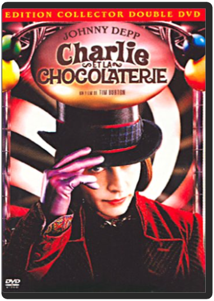
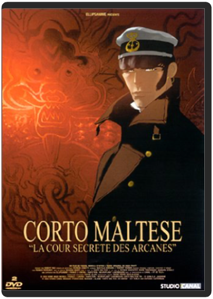

charlie et la chocolaterie - édition collectortim burton  Réalisation du génial créateur d'univers Tim Burton, adaptation d'un chef-d'œuvre de la littérature enfantine signé Roald Dahl, rôle-titre tenu par le talentueux caméléon Johnny Depp, il aurait fallu un énorme malentendu pour que le résultat soit raté. Burton s’intéresse encore à un personnage marginal qui, refusant le monde tel qu'il est, l’enrichit de sa propre imagination. L’alchimie Burton/Dahl contribue à faire un paysage d’une richesse visuelle époustouflante, soutenue par la musique de Danny Elfman et l’ahurissant talent de Johnny Depp. Drôle, fascinant, fantastique, émouvant, Tim Burton semble avoir trouvé le parfait équilibre entre sa vision décalée du monde et l’humanité qui sous-tend chacun de ses films. À l’image d’un film visuellement garni, cette édition souhaite proposer une interactivité à la fois exhaustive et ludique. Les menus très réussis ouvrent sur de nombreux suppléments revenant sur le tournage (l’attaque des écureuils, la création des Oompa-Loompa, les décors…). La meilleure surprise reste la partie consacrée aux jeux : le DVD propose en effet des activités ludiques, distrayantes et intelligentes. Suffisamment rare pour être souligné… www.ecranlarge.com  close : entre adultes consentantsmike nichols close : entre adultes consentantsmike nichols Bien que centré sur le sexe et la manipulation dans les rapports amoureux, le nouveau Mike Nichols reste visuellement sage, privilégiant le texte à l’image. Il signe dès lors un film plus en substance qu’en style et bouscule les esprits en s’appuyant sur des dialogues crus, directs et rarement placés dans la bouche de stars hollywoodiennes. Un portrait acerbe et très pessimiste de la gent masculine (tour à tour manipulateurs, cyniques, lâches…) servi par des acteurs inspirés - Natalie Portman et Clive Owen en tête -, qui évite la mièvrerie pour nous plonger dans un univers de cruauté et de noirceur.  Coffret Splendid 3 DVD : Les Bronzés / Les Bronzés font du ski / Le Père Noël est une ordurePatrice Leconte Coffret Splendid 3 DVD : Les Bronzés / Les Bronzés font du ski / Le Père Noël est une ordurePatrice Leconte corto maltese, la cour secrète des arcanes - édition collectorpascal morelli Le héros des bandes dessinées de Hugo Pratt se devait de connaître une adaptation au cinéma digne de sa légende et de l'attente de ses nombreux fans. Et c'est ce qu'a réussi le réalisateur Pascal Morelli avec La Cour secrète des Arcanes, film d'animation dont le cinéma français a tout lieu d'être fier. Le train de l'amiral Kolchak transporte l'or du gouvernement contre-révolutionnaire et attire toutes les convoitises dont celle des Lanternes Rouges et de Corto Maltese qui les aide dans cette chasse au trésor. L'animation fluide, les magnifiques couleurs et le rythme lancinant de l'intrigue rendent un parfait hommage à l'œuvre du dessinateur. Pascal Morelli colle parfaitement au mythique personnage qu'est devenu au fil des ans, Corto Maltese et n'oublie pas de dépeindre brillamment des personnages secondaires marquants comme son comparse Raspoutine, une duchesse russe (dangereuse femme fatale) et un aviateur américain. Outre des scènes d'action parfaitement orchestrées et des paysages magnifiés par une réalisation se reposant sur un travail de superposition (images réelles combinées à l'animation), Corto Maltese bénéficie d'un doublage soigneux apporté par des acteurs tels que Richard Berry, pour le rôle titre, Patrick Bouchitey (Raspoutine) et Marie Trintignant (la duchesse). Une œuvre de grande qualité. —Marc Maesen  danse avec les loupskevin costner danse avec les loupskevin costner Costner reçut un beau paquet d'oscars pour ce film émouvant et captivant de 1990 retraçant l'histoire d'un soldat blanc en poste d'éclaireur solitaire dans le Dakota des années 1870 et qui se lie d'amitié avec les communautés de Sioux avoisinantes. Danse avec les loups n'est peut-être pas un chef-d'oeuvre, mais il vaut bien mieux que la somme de ses bonnes intentions. Les personnages sont puissants, le développement de l'amitié est à la fois ambitieux et délicat, et l'idylle entre le héros et le personnage de Mary McDonnell est très touchante. Et, bien que la troisième partie qui traite de la venue d'une colonie de mormons semble superflue, Costner réussit malgré tout à nous conduire vers une conclusion terriblement émouvante. La direction est assurée, l'équilibre entre l'action et l'intimité est parfait. Que demander de plus à un film ? —Tom Keogh  de battre, mon coeur s'est arrêtéjacques audiard de battre, mon coeur s'est arrêtéjacques audiard Dans la famille Audiard, demandez le fils, réalisateur talentueux qui s’illustre dans des films aussi noirs que brillants. Un vernis qui recouvre des faux semblants, à l’image de Tom dont la complicité avec son père escroc dissimule son vrai désir intérieur : devenir un grand pianiste. À mesure que Tom va laisser la musique pénétrer son cœur, il va peu à peu s’éloigner de celui de son père. Au centre de ces parcours difficiles mais humainement prenants, de ce petit jeu entre doigté délicat et coups de poings et de gueule, Romain Duris insuffle avec une rare justesse la vie au Tom imaginé par le chef d’orchestre Audiard, réalisateur maestro.  dead manjim jarmusch dead manjim jarmusch Johnny Depp est la star de ce western étrange et un peu décevant. Il est excellent dans ce rôle de comptable dépensant ses derniers dollars pour rejoindre une ville fantôme du Texas avant de se retrouver sans un sou, perdu dans la nature. Malheureusement, le film n'est pas véritablement abouti et se contente de multiplier les situations peu intéressantes où l'on retrouve des hommes des bois consanguins, des shérifs stupides et un trio de tueurs énervants. Reste une belle brochette de comédiens (Robert Mitchum, Iggy Pop, Gabriel Byrne, Alfred Molina) et la bande originale, signée Neil Young. —Tom Keogh |


 Made with Delicious Library
Made with Delicious LibraryNancy, State zipflap congrotus delicious library Thomas, Julien